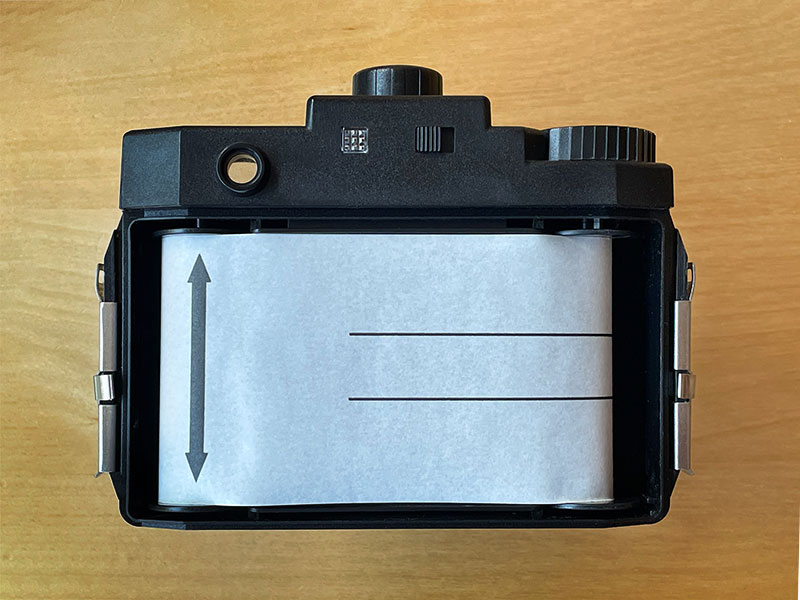
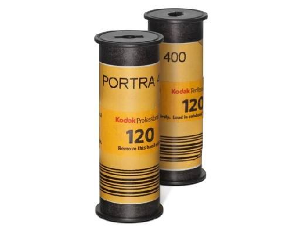
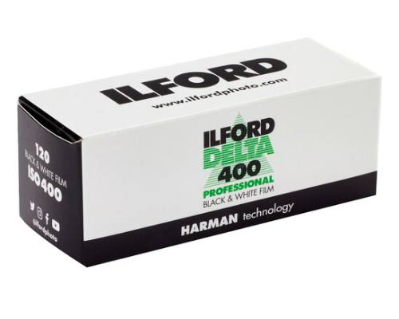
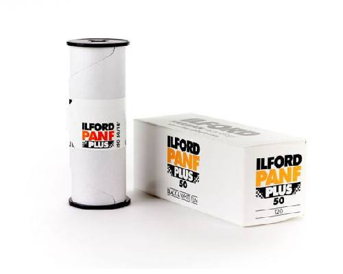

120 fillm was first created by Kodak in 1901. It was created for a camera called the Brownie, a type of box camera.
Back then, 120 film cameras were meant for ameture photographers but nowadays the rolls are reversed.
finding a good 120 film camera will likely cost you anywhere from 500 to 2,000 dollars.

This is how film is loaded into some 120 cameras. Some cameras are different however so it's best to
research the camera that you have before loading the film. 120 film is attached to backing paper, this protects the film
when it is wound up. For a detailed description on how to load 120 film in a variety of different cameras, click here.
Popular Film for 120 cameras



Some popular 120 film includes Cinestill 800, Portra 400, Ilford Delta 400, and Ilford PanF Plus 50. All of these are
also available on 35mm film. Speaking of which, to learn about 35mm film, click here.